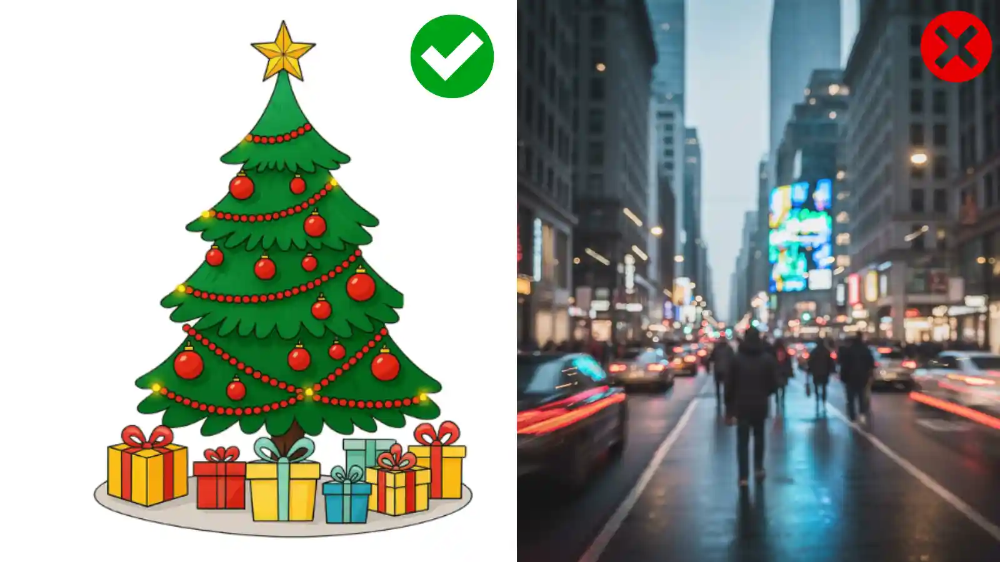

Unlock personalized learning and fun! Follow our expert guide to creating a dot-to-dot from any image in minutes.
CREATE YOUR CUSTOM DOT TO DOT NOW - IT'S FREECreating personalized educational content or unique family activities no longer requires advanced software. Our free online dot to dot maker transforms any image—from your child's drawing to a detailed mandala—into a printable puzzle instantly.
This comprehensive guide, written by our in-house design experts, will walk you through the entire process, ensuring your resulting custom connect the dots printable is high-quality and ready to print.
The entire process takes less than a minute. By following these steps, you can create a perfect, professional-looking dot to dot worksheet right from your browser.
The success of your custom puzzle hinges on the quality of the input image. Choose files with clear, sharp edges. For example, a black-and-white outline drawing will always yield better results than a blurry photo of a busy street.
Our generator works best when it can easily define the primary boundary of the object you want to feature.

Navigate directly to our Connect the Dots Generator on the main page. The tool is immediately accessible; there’s no need to register or install any software.
Locate the 'Choose File' button to upload your image file (PNG or JPG recommended).
Once uploaded, you must instruct the dot to dot creator how to interpret your image. Look for the 'Hint Type' and 'Number of Points' options:
Crucially, review this preview. Are the dots placed along the key features of your image? If the pattern is a little sparse or too cluttered, go back and adjust the 'Number of Points' or use the 'Adjust Threshold' slider to fine-tune the detection sensitivity.
Once satisfied with the preview, click the 'Download PDF' button for the highest quality print results, or 'Download PNG' for digital use.
Your custom-made file is instantly generated, ready to be printed on standard letter paper (8.5" x 11"). Remember, all our generated files are completely free and do not contain watermarks.
The secret to a perfect custom connect the dots puzzle is optimizing the source image beforehand. Our experts compiled these tips:
While JPG is accepted, PNG files are superior because they handle transparent backgrounds better, reducing noise when the algorithm searches for edges.
Ensure your image resolution is adequate, but avoid excessively large files (over 5MB), which can slow down the generation process.
Converting a photograph is the ultimate test for any dot to dot maker. If using a photo:
Beyond simple entertainment, a personalized connect the dots printable offers immense value:
Teachers can create review sheets based on lesson plans. Imagine a puzzle of a state map or a historical figure!
By adding complexity, the activity reinforces recognition skills while maintaining student engagement.
Create a puzzle of a bride and groom for a wedding shower, or a pet for a personalized gift.
The finished and colored puzzle becomes a heartfelt, custom-made piece of art.
Ready to put these steps into action? Stop reading and start creating!
GO TO THE FREE DOT TO DOT GENERATOR